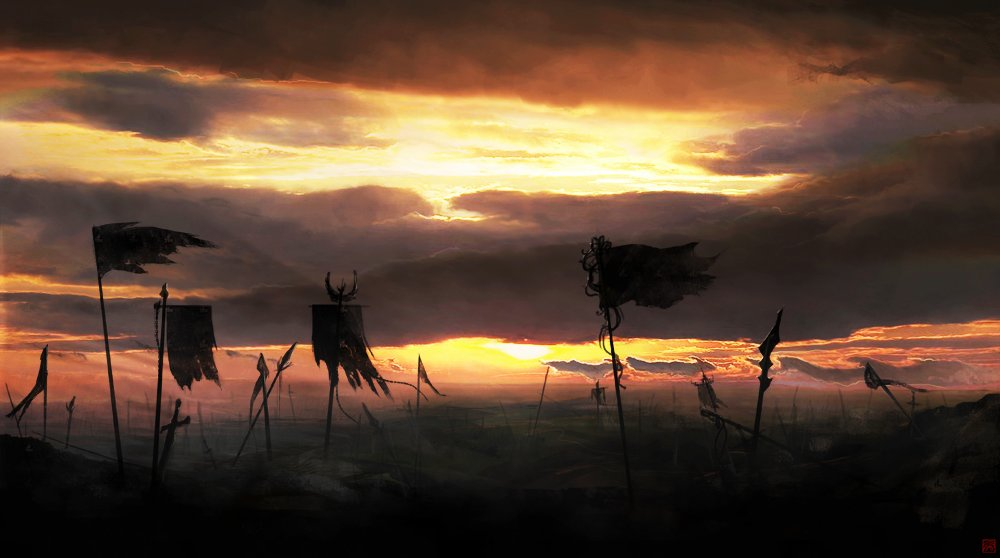

plays a huge part in our lives and so it's no wonder that it has its part in fantasy too.
There are countless ways in which to include it. As a song to set the mood or as a part of your world building (see the famous example above). As the integral theme of the story (and it's magic) like in Pratchett's Soul . As something your MC is very good at like Kvothe in Name of the Wind, or many other ways, small or story defining.
This month we want you to write a short story in which music plays a significant part in your world building, your character's life or your plot.
All content originally appeared on the Fantasy Faction Forums in the Monthly Writing Contest. You can see more information (and even participate in the forums!) on this particular contest by visiting the site.
http://fantasy-faction.com/forum/(may-2017)/(may-2017)-music-submission-thread/
I didn’t want to go on stage. It wasn’t stage-fright, although I was scared as hell. I’d seen what happened to people who performed on that stage. Hell, I’d even participated. That was why they were making me go up there.
You’d think I’d have been suspicious about a tavern in the middle of nowhere. I’ve never been one for restraint when it came to drinking though, and I’d been on the road for a long time. Instead of asking questions, I threw my coins on the table and counted my blessings.
It was like most other taverns. The bald barkeep had the look of a retired adventurer, and a pair of buxom wenches patrolled the common room. Then there was the stage that would be my doom.
The ale was good, and the wenches kept it coming. I was three mugs in when the first singer took the stage. He was a tall man, with barely any hair left on his head. His voice wasn’t bad, but he kept forgetting the words.
After his third mistake, a bearded man two tables over from me stood up. Before I even knew what he was doing, he threw a knife at the tall man. It landed in the singer’s chest, and he fell to the ground.
I expected an uproar, but there was none. A few others looked as confused as I was, but most of the people just went about their business. A pair of men carried the tall man’s body away, while another cleaned up the blood and returned the knife to the bearded man. This was none of my business, and I was content to keep it that way.
I was brought another mug, and another after that. I was halfway through the second when another singer took the stage. This one remembered the words, but his voice wasn’t made for singing. He wasn’t even halfway through the song when a dwarf in the corner brandished a crossbow and brought the performance to an end. Once again, the patrons of the tavern ignored the murder and the body was removed. If I were a smart man, I’d have left then. I’m not though, and I didn’t. One of the wenches brought me another mug.
Three more singers took their turns. Each had flaws and each met their end. The first couldn’t stay with the beat, and took a thrown hammer to the face. The second barely got started before breaking into a coughing spell. A pair of knives silenced him. The third wasn’t bad, but couldn’t hit the higher notes. He wouldn’t hit any notes with a throwing ax buried in his throat.
Meanwhile, the wenches kept bringing the ale and I kept drinking it. Another singer came out and I cheered along with the others. I had no doubt that this one would join the others in death, but I no longer cared. It was none of my business.
This one was bad. I mean really bad. It seemed all the faults had been taken from the others and given to this poor man. Nobody reacted though. He continued to sing, though that was a liberal use of the word. I could blame the ale, but I’ve always had a bit of a violent streak in me. Nobody else was going to stop the man. I pulled my knife and threw it as I came to my feet. It seemed to slowly spin through the air before burying itself in the singer’s chest. I’d aimed for his throat, but the ale had my aim off a bit.
All eyes in the room turned toward me as the man fell to the ground. The bearded man, the dwarf, and all the others came to their feet. They all shouted at once, but I only heard the bearded man.
“You murdered my favorite singer,” he shouted. “Why would you do such a thing?”
“I didn’t know,” I said. Why couldn’t I have just minded my own business? “I was just following your examples, figuring it was the local custom.”
“Can’t you read?” the dwarf asked. He pointed at a sign on the wall which read: “Don't Kill Tommy!”. I hadn’t noticed it. I’m not even sure it had been there before then. I told him that, but it didn’t help.
“I hope you can sing better than Tommy did,” the bearded man said. “You’ll be going on stage next.”
I’ve always had a fair voice, and have never been shy about using it. This place was different though. I wanted no part of that stage. The door was about twenty paces away, and I was determined to get there. I threw my shoulder into the man who’d thrown the ax into the throat of the singer with the baritone voice. He fell to the ground, but grabbed my foot on the way down. I landed hard, and was pulled to my feet even harder. The bearded man drove his fist into my gut, which brought up some of the ale I’d consumed.
“That wasn’t very smart,” he said. “I can kill you now, or you can sing and have a chance. It seems like an easy choice to me.”
“I guess I’ll sing then,” I replied, which brings me back to where I started. I didn’t want to go on stage, but here I was. The men took their seats and I searched my mind for the right song. I had to be perfect. Settling on one I’d sang many times in the past, I began. My voice was smooth, and the audience was soon clapping in rhythm.
Everything was perfect until I noticed a man seated at the table I’d previously occupied. It was Tommy, the man who I’d killed! There was no blood on his shirt, and he was very much alive.
I missed a beat. It was a minor mistake, but that was all it took in this tough room. Tommy came to his feet. My knife flew from his fingers and again seemed to slowly spin through the air. I took in the room, knowing this would likely be my last sight. Tommy wasn’t the only one returned to life. All the dead singers were in the audience. They all cheered as the knife landed in my heart and I joined them forever.
And lo! In the last days of the War, the young prince Tychos did lead his people unto the Broken Plains, where battle would be joined against the forces of the malicious General #####. But the men were weary, and did not wish to fight. And so it was agreed that Tychos and ##### would do battle in single combat, through the ancient and respected medium of the Rap Battle.
Tychos:
Your army's the best, to that I'll attest,
But even you cannot fight the future.
Your time is long past - you're fading fast!
When we are done, you'll surely need sutures.
#####:
You're no more than a kid! I'll rip you to bits
And I'll dance and I'll spit on your grave.
So lay down your tool, you insolent fool
And I'll see that your parents are saved.
Tychos:
Spare my father? I know you'd much rather
Have his head served on a platter.
I don't mean to rush, but when you are crushed
It'll be your army, not mine, that scatters.
#####:
Well that settles that, you arrogant brat.
None can deny I gave you fair chance.
Perhaps it is time, we did away with rhyme
And let our blades do their dance.
Tychos:
You would so easily quit? Contemptible nitwit!
Are you truly so much at a loss
That you would now flee, and leave it to me
To clean up your army of dross?
#####:
If I'm to be honest, I'd rather write sonnets
Than engage in the this battle with you.
But you've forced my hand, so I'll defend my land
From you and your army of few?
My earlier statement I herby retract, we both know it a fact
That I'll gladly have your parents killed.
I'll turn their hides into some kind of sofa just as soon as this duel is over.
At rapping I am clearly more skilled.
Tychos:
More skilled than I? A bold claim for one about to die -
To fall on his own sword in shame.
At having been bested by a young rapper, untested.
Why! I have already forgotten your name.
For such is the fate of the loser of this debate
To be forgotten by history.
While my destiny's greater. I'll be celebrated!
For mine is a song of blood, guts and glory.
#####:
Your eye-rhymes and half-rhymes are rather quaint.
Your words little more than a verbal feint.
But you could only win by becoming a cheater,
For though I admit you're quite the word-beater,
I doubt you'll cope now I've altered the metre!
Tychos:
Your rhythm and flow are truly exceptional.
At rapping I hereby declare you professional.
But I fear our words have grown rather digressional.
I find your rhymes more conversational
Than confrontational.
This duel should be something truly sensational.
Not merely trite, and recreational.
#####:
You accuse me of digression, son?
Your limbs will be digressed from your body by the time I am done.
I am not here to indulge in childish fun,
But to ensure that this war is won.
Tychos:
Won it shall be. Won by me
And my loyal legions.
We'll take it back, the lands seized in attack
And all your rebellious regions.
I've swords and spearmen and dozens of others
Avenging lost fathers and defending their mothers.
You have a ragtag assembly of mercenary hordes,
While I have regiments of barons and lords.
Your numbers may be greater, but I have right on my side.
And I trust in the fates, that they shall decide
The honourable winner of this pathetic feud
Once battle is done and your corpse is on view.
Your ideals are slavery, mine are freedom.
And nothing shall stand between a prince and his kingdom.
And so unto battle the two men marched, and Prince Tychos did seize victory in action just as he did in words. And so he became King Tychos. As for the General, his name has been excised from history. As is only right.

"Hail, brother!" Ava Mangrave reined in her stallion a short distance from a barrier of felled trees that clogged a narrow ravine etched between two protecting shoulders of hill.
Rickard's voice answered from the barricade. "Hail, sister! Have you come to dance? I'd take a turn, but I hear you bedded the last three men you partnered. And the obvious aside... you're really not my type." The ravine erupted with hoots and crude invitations from the men Rickard had rallied to his cause.
Ranked behind Ava, her own sworn men grumbled and fingered their weapons. She glanced over at the gray-cloaked figure waiting nearby. "Well?"
"He did not speak long enough," said the man. His words echoed eerily as though dredged up from a deep-dug well.
"Most days that would be a blessing." Ava chewed her cheek in thought, then summoned her marshal. "Garett, who was that boy sang Molly's Lament by the fire last night?"
The grey-maned soldier had a perpetual squint from years in the field. "Village lad. Barger's troop." He squirted tobacco into the dirt. "Good voice. Tears all round."
"That's the one." She pitched her voice low. "He's to start up with Men of Hawslyn. Make it his own idea, do you understand? A spontaneous offering for those about to die." Garett nodded the way he did when he didn't understand but would do whatever his liege lady asked. He turned and rode back through the lines. Anxiety fought with Ava's self-control. If this idea didn't work, it would be blades and blood all round.
Waiting. She hated waiting. Ava pondered how long it would take Garrett to arrange this unplanned demonstration of authentic emotion.
At last a high, sweet voice rose from midway down the line. Men of Hawslyn. A song like mead to those who lived and fought in this land between the lakes. Once one started it, everyone sang. Her brother wouldn't be able to resist.
And the lad was good.
Men of Hawslyn, to the furrows,
Break your swords in rocky soil.
A shiver ran down Ava's spine. She had to stop herself from singing along.
Men of Hawslyn to the barrows,
Sow the earth with bloody toil.
A mass of deep bass, off-key baritone, and jarring tenor voices joined the first, with a few sopranos sprinkled in. If you hadn't been raised with the words from childhood, you'd never pick them out.
In the morning, Mardin Highsmith
kissed his goodwife and his child,
took his blade from off the mantle,
trod the lane to join the file.
Rickard's men began to sing as well. It didn't matter if soldiers were about to feast or fight, they'd let roast and tempers cool to finish out this song.
"Well?" Ava called over the din.
"There are too many." The hooded man extended claw-like fingers toward the barricade. "I cannot find your brother's one voice among them all."
"You oversold your talent, sir. You said, only get him speaking or singing, and I shall find him."
The wizard turned his shadowed face to Ava. "One voice. I said one voice. Once a voice is in my grip, so is the man."
"Find me that one voice, magician, or it's you'll be in my grip." Ava lazily drew her father's sword, the one she'd used to cut the old bastard down. Was it only three short weeks ago?
In the evening, Mardin Legless
dragged his body past the dead,
quenched his thirst with crimson water,
dug a barrow for his bed.
Ava hated the song. It was just like Hawslynmen to celebrate death and maiming mere moments before doing their damnedest to maim and murder each other. Women wouldn't waste the time on it. If there was work to do, they'd just grab a knife and do it. Chicken, sheep, or men, they all bled the same. And now the two armies were reaching the last verse, all she had to show for this sudden notion of hers was seeing battle-hardened warriors weep into their beards and her oh-so terrifying wizard waste her patience.
One voice? A new idea came to her. She'd get the wizard that one voice.
Ava spurred forward, and the last refrain faltered at the vision of her: sunlight flashing on white horse, white cape, white skin, and streaming, raven hair. The wizard joined her, robes flapping, as she dismounted.
Knowing her brother's men stared back from between the branches, Ava called out. "Men of Hawslyn!" A cold breeze ruffled the grass. "You are my men as surely as you were born between the lakes. Following my brother will bring you only ruin." True words, but her only reply was silence. "I want no blood today, except my traitor brother's. I am eldest, and the throne is rightly mine. But though you are rebels and damned by your own choice, I show you mercy. I challenge my brother the ancient way -- to duel by song and word."
Both sides erupted in confusion, the news passing up and down the lines, until Rickard's laughter rang out loud and long. "Song and word?" he scoffed. "I'd give up my balls before I'd listen to you sing!"
Damn Rickard. This new gamble had to work. He had to take the challenge and sing his turn. If the wizard could seize his voice and force him to bow, many doomed men would live to see out this day. But as she began her song, she felt in her bones she'd been a fool to try.
"Men of Hawslyn to your women,
Swing your sword where it belongs
Leave my brother to his whining
He'll kneel to me before e'er long."
She paused for Rickard to come out of hiding, then went on before the moment dragged. She barely registered marshal Garrett's return to his usual station behind her.
"Men of Hawslyn to the harvest,
To your babes and to your farms,
Leave poor Rickard to my mercy,
Little boy won't come to harm."
He came at last, pushing through the barricade, striding forward like he was walking into one of his favorite taverns.
"Get ready, wizar--" Ava's voice stopped in her throat. Power gripped her mind, bending her immediately to an iron will.
"Shh," the wizard's voice whispered in her mind. Her stomach heaved and her head pounded. "Peace now. Don't try to fight me. Shh."
Rickard stopped some paces away, a smile stretched falsely from ear to ear. "Song and word?" he jeered. "Those are ways so ancient they creak. Do you think this is one of our old nursery games?" He stepped forward again until only a few feet separated them. Ava tried to move her lips, her jaw, anything. Gods, what had she been thinking?
Hatred infused her brother's voice. "I'm not playing games, Ava. I'm not the boy I was three weeks ago, and I'm not singing for you or anyone. If come you at us, we'll grind you into dog's meat. We'll--" his eyes bulged, and his words choked off.
The wizard stepped calmly between them, turning his hooded face from one to the other. "You so-called nobles. I loathe your kind as I loathe little else. You pretend your petty squabbles matter, and countless men and women die for your vanity."
Ava was just able to meet her brother's eyes, but closed them against the fury and fear in his.
"Now," the wizard continued," you will return to your people and call off this pointless battle. Then you will appoint me as regent. Someone has to guide this backward kingdom, and I nominate m--"
An arrow sprang out from the wizard's mouth, spraying blood and teeth, taking his face with it and tumbling his body to the ground. The grip on Ava's mind vanished, leaving her gasping.
Garret stood a few yards away, cradling a cross bow. "Never did trust wizards."
"What was that?!" Rickard gagged and spat. "Was that your doing, witch?"
Ava nearly cringed. It had been her doing, her foolishness. She took a long breath to regain her control. "Rickard. Rickard, perhaps we should --"
"Oh, no." Her brother chopped his hand through the air. "No peace between us. Not now, not ever." He jabbed an accusing finger at her. "You killed our father."
"He killed my mother!"
"Because she was a conniving bitch, just like you!"
Ava tried to find her brother in this stranger's face. A flash of memory seized her: Rickard in the nursery, crying over a skinned knee while she kissed away his tears. Then it was gone, and all her delay with it.
"Go," she said.
Rickard stalked off without a backward look.
By the time Ava remounted, the village lad's voice had risen once more.
Men of Hawslyn.
By the time the bloody work began, the raging of a thousand men crashed in her ears.
Men of Hawslyn!
Men of Hawslyn!
MEN OF HAWSLYN!!
In the clear silence of a cloudless, windless evening sky, a full moon rose over the seaside city. A dark disquiet lay over the roofs and chimneys like a fog. No light shone from any window. No dog barked. Even the waves came in shushed sighs. This night a new Arch Magus would ascend to rule, or not. And in the morning, someone’s remains would be rolled into the bay.
They met in the broad, open space of the Queen’s Square, flanked by the lower city’s alleys on one side and the Heights’ wide stone avenues on the other. The square shone bright beneath the moon. Gone were the vendors’ tents and tables, the farmers’ market-carts, and the fishmongers’ racks. The livestock pens had been taken down and carried away.
Despite her age, Grolliker approached with steady, even steps, the tapping of her white staff and the whispering of her pearly robes the only sounds. A silver, opal-studded circlet swept back her silver braids. She moved to the square’s north corner, the defender’s traditional position. She whispered, and her wards ignited around her, incandescent blue spheres.
The young upstart, the black sorceress Quelliard, entered the square, her sable gown shining, her spear-pointed staff across her shoulders. Coal-black tresses bounced and swayed with every step.
There were no pleasantries. No bows of courteous equals. Only Grolliker’s sigh and Quelliard’s smirk.
Quelliard growled in her throat and danced spinning into the square, her gown and shadowy mane twirling behind her as she pirhouetted across the flagstones. Her staff whirled into a single hand that carved a glowing circle through the air around her. Her song started as little more than a whisper, low, sultry tones that crept up from beneath the gauzy silence:
“Deadly,
Death against life,
Flesh torn from flesh and life born of strife.”
Her voice rose like a wind, bitter with anger and the strength of her youth. It became a thing of wild wind and terrible wonder, and in the spearhead of her staff, a fierce light shone, glittering with the cadence of her words:
“Darkest Powers - surge to motion,
Wake this crone from foolish notions!
Beneath this moon come claim your prize,
Take her life and blind her eyes!
Scourging shadows - Burn her! Lash her!
Hellfire rage and Darkflame blast her!”
Silent lightning leapt from Quelliard’s spear-point to Grolliker’s wards, over and over and over. Showers of golden sparks shot up and rained down around the old woman.
Quelliard spun to a stop, hoisted her staff high, and lowered the point at her foe. From every shadow, whispering echoes resonated as her voice climbed to the ceiling of the sky:
“Two queens never rule together,
No queen lives or rules forever,
Deadly now we crash together,
White swan chokes on raven’s feather!”
A swirling stormcloud of ghostly ravens issued from the shadows, thundering into Grolliker’s buckling wards like a thousand evil arrows. The torrent blotted out the Arch Magus’s wards and shining robes. Panting with exertion, Quelliard faltered and lowered her spear-staff. The storm ended. A dark and foreboding frown slid across her mouth as the Arch Magus emerged, leaning wearily on her staff.
The old Arch Magus giggled, lightly at first, as though at a small joke shared among friends. But Grolliker’s giggle grew to a belly-rumbling laugh, the very sound of which made Quelliard’s eyes glower with hatred.
“Verily,” old Gronniker said, wiping a tear from her eye. She moved into the square, not with the stride of a ruling Arch Magus or the whirling acrobatics of her challenger, but with the light, single-step shuffle of a girl playing rope-skip. Her staff tapped on the stones, marking time as she danced with her moon-shadow. Her opponent fell back as she advanced. Her voice neither rose to the sky nor grumbled with the solemnity of the earth, but chittered with the glee of childhood:
“One-step, two-step, three-step, four,”
“Quelliard! Quelliard! At my door!”
Grolliker paused on one foot, thin hands waving playfully in the air for balance. She raised her face to her opponent, pulled her lips between her teeth as if straining against a deep and determined mirth, then stuck out her tongue and grimaced like a child.
“Five-step, six-step, seven-step, eight!
Quelliard’s young but the hour grows late!”
Grolliker set her staff before her and let go. It stood immobile as the old Arch Magus bent one arm around it and raised the other as though leading a dance partner. She sauntered around her staff as she echoed the youthful tones of Quelliard’s song:
“Woeful weapons hate and anger, they cut their wielders’ hands,
But happy hearts make stalwart armor, a lasting shield that stands.”
Grolliker’s voice grew merry as she danced first this way, then that way, pressing her opponent back. Again her song changed, and the words rolled from her as rich as a young wife’s hair as she made her way toward the young sorceress.
“The war you fight is yours alone, your quarrel’s not with me,
You waste your rage so far from home, consumed with jealousy,
You think that all that’s had or held must come from bitter strife,
And seeking now to make your mark, you come to take my life?”
Quelliard caught her breath. Her knuckles shone livid white as she swung her staff at the old woman. In a blurring arc, the steel tip glanced across the sphere of Grolliker’s wards with a metallic thrum. The sorceress barked a command, and the rigid shaft suddenly glowed fiery red and wilted into a flaming coil, a twisting whip that followed the movements of her wrist as she whirled it back and forth. The blade whistled through air at the end of it, careening into Grolliker’s shields, then rebounding, sparking across the flagstones before Grolliker’s feet.
“Enough!” cried the old Arch Magus. She aimed her staff at the streaking spear-head and growled. The whip moved faster and faster, shaking Quelliard’s arm. Quelliard cried out and grasped the handle with both hands.
Grolliker worked her staff back and forth, and the whip pitched with her movements. With each utterance, Quelliard was yanked and tugged back and forth by the fury of the spear-tip’s motions. The Arch Magus began a slower song, her tone deep with the wisdom of maturity:
“An older, nobler, greater power,
Fills my mind and heart this hour,
Your burning bitter hate and rage,
The vigor of your youthful age,
Can neither mar nor wrest from me,
The crown you sought in envy.”
Grolliker swung her staff down and struck Quelliard’s speartip. There was a clanging thrum, and the blade went spinning back.
Quelliard moaned and sank to her knees, looking down at her weapon, now just a staff again. She cradled the spear-head that had pierced her just below her ribs. When she looked up at old Grolliker, tears ran down her cheeks.
Grolliker raised her staff and reached out with the tip toward Quelliard. Quelliard tried to crawl back, away from the end of the staff that would take her life should it touch her. Too faint to hear, she mouthed the word: “mercy.”
Too wise to lower her defenses, Grolliker sang on, her voice rasping like a whispered deathbed confession, tinged with regret:
“You foolish thoughtless witless girl, you struck a deadly pact,
You pledged a death beneath this moon, you cannot take it back.
No mercy can I offer you, your life’s not mine to give,
You gave it to the blackest powers, they’ll come here if you live,
They’ll raise this city down to ash and every soul devour,
And I could not resist them had I thrice my greatest power.”
Quelliard lay spent at the edge of the square and could retreat no further. Grolliker knelt and shook her head sadly at the young woman.
“Joyless must I take from you what none should ever take,
A wasted life of greatness gone, a loss I can’t unmake.
Weary grow my steps of late, my crown it bends my back.
Would that you had come to me and made a different pact."
A long roll of distant thunder sounded, far out to sea. Grolliker rose, her voice a mournful dirge:
Go now to your darkened grave beneath the full moon’s light,
Fullfill the promise that you made, begin your endless plight.
Bend your knees before you meet him,
And tell your master when you greet him,
That though your voice was strong and fierce,
Your song could not my armor pierce.
An older, nobler, greater power,
Filled my mind and heart this hour,
A boundless love, a joy, a laughter,
That heard but once is heard thereafter.”
Grolliker gently pushed her staff into contact with Quelliard’s breastbone. Quelliard slumped to the ground, staring up with eyes that now beheld a very different darkness. The Arch Magus turned and shuffled away to the slow rhythm of the tapping of her staff.
It was a usual morning in Graytown. The sun rose over the top of the Gray Mountains and brightened the Gray Valley and the town on the north side of it. It's mayor had just left his house and was walking to the town hall. He cast a gloomy look at the sky and guessed if it's going to be a rain later on and if it is, then, would his leg be bothering him a lot or just a little.
Graytown was a small outpost of mankind surrounded by beautiful wildlands. Definitely not a place where wealthy city dwellers would like their offsprings to settle in, as they don't usually consider wild bears and snakes to be beautiful. Apart from animals the valley was inhabited by a dozen of farmers with their families; there was one inn in the town, one smith, a sawmill, a local fool, a knight to protect them all, and, of course, the mayor.
"Hi, Tom!" a milkman shouted as the mayor passed by his house.
"Hi, Bill, how are you?"
"Could be better," said the milkman putting a full barrel on a carriage. "Pain in the shoulder will kill me, it's twitching all day long!"
"Chin up, Bill, chin up!"
Town hall stood on the main and only square of Graytown. Rolf, the fool, was usually seen near it, while his flute, unfortunately, could be heard from afar. That morning wasn't an exception. The fool was playing loud and with determination but not much of a talent.
"Bah!" said the mayor. "Same melody all these years, Rolf. Couldn't you learn something new?"
And right after his words a sound of drum came from the mountains.
"Boom. Boom. Bara-boom!"
"Hm," said the mayor looking at the sky anxiously. "That doesn’t sound like something good . . ."
Soon everyone in the town was very anxious. Sir Logan, the knight, was sent to scout the valley, but found nothing at all. What was even more strange, the sound was heard only within Graytown and was fading fast outside of it’s borders. Thanks goodness it was gone at sundown, and everyone could sleep.
On the next morning, however, the drumming resumed. It wasn’t so loud now, but soon a beautiful violin joined it. Longing, weeping, flying from afar, it's mysterious voice overwhelmed the town.
"Whoever is behind this, a ghost or an elf, it must be stoped!" said woodcutter John to his apprentice.
"Yes sir!" the boy replied.
"I would cut his hands off!" his master added heavily.
The woodcutter hated his job as well as the half of the Graytowners, and only his good character prevented him from messing things up already.
"That's awful!" said the milkman to his wife and children during dinner. "The mayor has to do something. Because of these annoying sounds my shoulder's getting even worse!"
And his right shoulder indeed was moving up and down uncontrollably.
On the third day a lute sound came up. It's romantic intonation resembled sir Logan of a time when he was young and questing in the name of his lady. He even recalled a dance that he learned at the king's court.
All townsmen gathered at the main square to decide how to get rid of the music. Only Rolf didn't join them, but he was standing near the hall as usually and playing as good as never before with a new and solid backing.
"Outrageous!" exclaimed one of the farmers while his hands were making waves in the air. "I can not rest after work because of the damn buzzing!"
"We should stop it before we all get sick!" yielded another farmer while his right foot was drawing circles.
"There must be someone to blame!" said the woodcutter.
"And he must be somewhere near!" added the knight while trying to practice some of the dance steps.
A witch hunt began. Every house, every storage was opened and searched thoroughly, but with no result. In the end people even blamed the fool in doing dark magic, but failed to catch him because of nervous motions their hands and legs were doing all the time; and everyone gave up.
After ten days some more instruments joined the invisible orchestra. And in the morning the woodcutter said to his apprentice, rhythmically waving his axe in the air:
"You know, I'm kind of starting to enjoy it."
"Yes, sir!" answered the boy, jumping high.
That day townsfolk decided to make a dance party on the square.
"I have to admit," said the mayor cautiously, "it makes things more lively around here."
"Indeed," agreed the milkman and both of his shoulders were moving smoothly now.
On the day twenty orcs invaded Graytown, but the knight was too busy to fight them as he was learning new pas.
"I would kill you!" said Garhg the Big Boss when orcs surrounded sir Logan on the square. "I would pillage your damn town!" he added. "But I can't do a thing . . ."
His hands were flying so fast that he was to unable hold his axe or a shield. Together with his orc-boys, they danced boogie woogie on the square until late night and then felt down completely exhausted.
It was the day thirty when the mayor was going to the town hall, whistling and jumping as usual. He looked at the sun, smiled and though that maybe he can use the music to attract tourist to Graytown, and maybe he can even change the name of the town to something more… attractive. Rolf was at his position, but today the fool stood still and with surprisingly grim expression on his face.
"What's wrong?" the mayor asked and immediately understood himself. The music was gone. Forever as it turned out later.
A silent grayness fell on the town; and one day the mayor asked the fool, with a blink of hope in his voce, "Rolf, are you going to play?"
"Don't know, probably . . ." Rolf's tone was even more grave than his face.
"Could you play, please?" begged mayor. "Just some simple country tune? You know, as before?"
"I will try . . ." Rolf raised his head and took the flute. His eyes sparkled. "I will do my best!"
And so he started. And in the evening the milkman joined him with his new drum made of a barrel. On the next day the woodcutter came with an old violin that grandpa passed to him. And one farmer brought a horn on the third day, while another, a roughly made lute. And the mayor was singing on the fifth day. And yes, all that time sir Logan was dancing on the square.
And so they played forth. Maybe not as good as the mysterious musicians, but well enough to make things more lively around Graytown. And, of course, they managed to repel the second invasion of orcs without any blood spilt.
The Fivesworn Council sang the Hymn of Revocation shortly after the sun topped the fertile mountains of the Green Ridge. Aria had just finished hanging laundry when the first neophyte began to sob. She found him—Tym—collapsed on a rock twenty paces down a well-worn path of grass and stone.
In the camp below, Tym’s anguished weeping was joined by others who had discovered what they had lost. The neophyte camp was a descending mess of mud and straw huts, and it filled with the wails of those wronged by this morning’s hymn. Beyond the camp, the mirrored sheet of Pale Lake stretched out to the grand forests of Rain, trees that swayed and rustled with the warm morning wind. The horizon beyond those great and ancient trees was bright and blue, with a smattering of wispy cloud.
It was a very pretty day for the world they all knew to end.
Aria had been warned, of course, but she had not known the hymn would be sung today. The machinations of the Fivesworn Council were unknowable to all save those elected to it, but Aria knew more than most. Few were trusted like those who could neither speak nor write, and Bloodsinger Octavia trusted Aria like her own daughter. For all intents and purposes, Aria was.
Today there would be shouting across the Bloodsinger camp, loud protests, perhaps even rioting. Yet even those terrors would be a small price to pay for ensuring a woman like Catylia Devane never sang souls into the Underside again. Few in the camp knew one untouched by the deep and dreadful dirges of the Deathsinger, yet Catylia’s impending victory, Aria knew, was only one reason for the hymn.
Aria reached Tym and squeezed his shoulder. He was just sixteen, one year younger than her, living a life that was blessed and perfect. His life was not perfect any longer.
Tym looked up, eyes red and cheeks wet, but he didn’t ask Aria if she knew what had happened or why. Why would he? Aria’s brother had silenced her with a song when she was just two years old, and even the Fivesworn Council couldn’t undo what he had done to her. Her brother couldn’t either, being dead.
Aria knelt before Tym and mouthed the words she could not speak. “Are you okay?”
He waved her off, waved that he would be fine, and Aria could imagine what he must be thinking right now. This was temporary. This would pass, and he would sing again soon. He was so very, very wrong.
She left Tym to fantasize and ascended the path of grass and stone that led to the Fivesworn Council. As she walked, she passed Bloodsinger Apprentices and Journeymages emerging from their fine wooden lodges. They sang together with determination and elegance, sang songs that were pitch-perfect, beautiful, and haunting, but those songs no longer changed the world. They never would again.
By the time Aria reached the towering three-story lodge of the Fivesworn Council, she was covered in sweat and the sun hung high. She heard no sobbing or singing any longer. Only hands of the council—men and women like her—were allowed beyond the Woodsung Gate, though that would change when everyone learned the gate had lost its power to repel. The gate, like the Bloodsingers, was no more.
Octavia met her with a freshly-inked tome of blood glyphs in hand. She looked impossibly regal in her crimson robes. The spiky vine tattoos winding across Octavia’s dark skin and bald head were as intricate as those on her arms and legs, signs of her place of honor at the head of all tribes. The rest of the Fivesworn Council, Aria knew, was gone, fled before the wrath of those they ruled could find them.
“You must go,” Octavia said.
Aria took the tome and tucked it into her own gray robes. Before long every Bloodsinger in the camp would be marching up here to speak to the council, to demand answers and an undoing of the hymn. All knew a hymn powerful enough to take bloodsinging from the world could only be sung by the Fivesworn Council, and Aria knew the others would never accept that hymn as irreversible.
They would threaten Octavia to get their power back. They would hurt her, if necessary, and still Octavia refused to run. That was why Octavia and the others had known it was time to take that power away.
The countless travesties and slaughters of Catylia Devane had begun the conversation that led to the Hymn of Revocation, but hundreds of daily accidents had ended it. Accidents like those of Aria’s brother, who sang his baby sister into silence one morning because he was tired of hearing her cry.
“Hide it well,” Octavia said, speaking of the tome. “Tell your children and no others. One day, generations from now, those in the centuries beyond ours will be ready to change the world again.”
Aria stared and mouthed one word. “You?”
“I’ll be fine,” Octavia lied. “Someone must explain what happened so the news can spread.”
Aria pointed down the path, then at Octavia. She pointed up the peak.
“I drew the white rock,” Octavia assured her. “And so it is my great honor to explain what we did and why we did it. The others are safely away now, with their own tomes, and you must be away too.”
Now it was Aria’s turn to cry. Octavia pulled her close and hugged her as the first traces of angry shouting carried up the path. Then Octavia stepped away and pointed up the mountain. “Go.”
Aria went. Tears streamed down her cheeks and a lump grew in her useless throat as she climbed to the peak beyond the lodge. On the far side were the mighty waters of the Layn, and once she crossed into the deserts of Tellvan, none would ever find her again. Her old life would end forever.
Aria had sworn to serve Bloodsinger Octavia to the death, but she had always assumed that meant her own death, not Octavia’s. She had always assumed she would be the one the others lynched. She had just started down a treacherous goat path when an anguished shout froze her. “Aria!”
It was Tym. Had he followed her? Had he seen the book? As she turned to find him after her, knife in hand, Aria answered both questions. Tym wanted his power back.
“Give me the book,” Tym grimaced. “The Deathsinger’s coming. How can we stop her if we can’t sing?”
Aria wanted to tell Tym that even Catylia could sing no longer, that nothing anyone could do would ever undo the hymn. Yet she could not tell Tym anything, because her words did not work.
“Give me the book and I’ll let you go,” Tym begged. “Please, Aria!”
She raised one hand in warning, and Tym stopped. Negotiating. She backed to a drop sheer as a knife.
“What are you doing?” Tym’s eyes grew wide as he anticipated her. “No, don’t!”
Aria’s heels found the edge. She looked down at tiny outcroppings and tiny trees and even wispy clouds, all waiting for her below. Waiting for her fall.
“Don’t do it.” Tym advanced on her once more, knife raised, but he looked worried now, not angry. “Please, Aria, I don’t want to hurt you. Stop!”
He was lying, though he didn’t know it yet. As Aria sliced her index finger with the sharp nail of her thumb, she stepped back off the ledge. Then she fell. Then she scribed. Then everything went white.
Three days later, after the searching ended, Aria descended a different mountain on a cold morning shadowed by clouds. The miracle that saved her—her scribing, her teleportation, and Octavia’s glyphs—seemed like a dream this morning, except it couldn’t be. This morning, Bloodsinger Octavia was dead.
Years of studying astral glyphs with Octavia had let Aria escape the others, but it still hurt that she had not saved her foster mother. All that remained of Octavia was the book in Aria’s pack and the glyphs it held, written manifestations of all now stolen from the world. Written song.
Aria’s tome would make the world better one day. Her descendants would make the world better one day, yet on this cold morning, that bright future seemed very far away.
Aria heard no pursuit as she descended, but she did hear something else. Singing filled the forests of Rain below her, and this singing came from birds, not humans. Birds sang for pleasure, for camaraderie, not to harm or kill or change.
Birdsong was pure, like human singing would be now. No brother in this new world would accidentally sing his sister mute again. That was a sacrifice worthy of Octavia. That was a sacrifice Aria could accept.
She wiped her eyes, adjusted her pack, and walked into the forest to change the world.
"Mamma?" Caeda reached up to her mother with grabby hands.
Syndra giggled. "What is it, my sweet?" She pulled Caeda's fingers off her shirt.
"Do I get a story, mamma?" Caeda stared up at her with the wide eyes of a curious child – how could she refuse?
"Alright. Just one, though. You must get to sleep soon."
Caeda nodded. "I will! I will! Just one story, mamma!"
Syndra stood up straight and went over to the bookshelf on the other side of the room. "Which one would you like? This one?"
Caeda pulled a face and shook her head.
"How about this one?"
"Mamma!" Caeda whined.
Syndra laughed, and plucked Caeda’s favourite story, The Song of Castle Aldwick, from the bookshelf. She made her way back over to Caeda’s bed, and sat by her feet.
"Alright. I'll read this one."
"Yay!" Caeda clapped her hands as Syndra opened the book to the first page.
"Once upon a time, a powerful being known as the Archmage lived in the great Castle Aldwick. Elves loved the Archmage, for he was kind and benevolent, and he had written the Song: a wondrous and powerful tune and lyrics, and the people of Leumia lived in awe and fear of it.
"Those who earned the favour of the Archmage were allowed the secret knowledge of the Song: they were taught single notes, single words, and together, they could have put the pieces together and sung the whole Song, but they didn't know which order the words and notes went. The Archmage kept it a closely guarded secret, for fear that the power of the Song would fall into the wrong hands.
"The Archmage’s fear was realised the day a thief by the name of Aien broke into Castle Aldwick. Aien had come from a nearby village and was determined to learn the Song, but the Archmage had refused him every time he had asked for he could not let such a powerful magic fall into the hands of a thief. If only Aien could renounce his ways, would the Archmage teach him some of the Song. Over time, Aien grew impatient, and sought to take the Song for himself.
"Now Aien knew one note of the Song, which he had forced a councillor in the Archmage's court to teach him. He used this note to break down the gates of Castle Aldwick, and to put all of the guards into a deep sleep from which they have yet to awaken.
"But the Archmage heard Aien singing the note, and was enraged. He stormed from his quarters and met Aien at the drawbridge of Castle Aldwick. He despaired at the sight of his guards, sleeping and unable to awaken.
"The Archmage took a deep breath, and prepared to use the Song to banish Aien from Leumia for ever, but Aien had a quicker voice than he, and he used his one note to send the Archmage to the same slumbering realm as his guards. With the castle now empty, Aien made for the Archmage's quarters, and for the Song he had sought for so long.
"Aien spent the next twenty years locked up in Castle Aldwick learning the Song. Many tried to rescue the Archmage from Aien’s hold, but none knew any of the Song and Aien only grew more powerful each day. When he finally emerged, he had the entire Song at his disposal.
“He went back to his village, and used the Song to kill his greatest enemy. Those who fought to avenge the man also perished at Aien's voice. By the end of that day, fifteen men lay dead in the village centre.
"Then Aien's mother came out from her house. Aien had thought her dead, that she had passed on while he slaved over the Song in Castle Aldwick. She begged him to stop, to give up the Song, that no amount of power was worth the atrocities he had committed.
"Seeing his mother’s grief and the destruction he had wrought, Aien agreed, but the people of the village did not believe him. They demanded his exile, and he could not stop them without breaking the promise to his mother. So he and his mother left the village together, and went back to Castle Aldwick.
"When they got there, Aien’s mother stole a sword from one of the slumbering guards, and ran Aien through with it. Then, she went and found the Song in the Archmage’s quarters, and divided it into two parts: one part lyrics, one part notes, and gave each to a different knight with the orders to take the two pieces to the ends of the world, so that no one else might ever use the Song.
"And so the Song is lost, and it will never be heard again."
Syndra closed the book and looked up at Caeda.
"Mamma?" Caeda asked, as Syndra laid her down to sleep.
"Yes, my child?"
"Will anyone ever find the Song?"
Syndra chuckled. "No, my darling. It is just a story."
With her eyelids drooping, Caeda gave a slow nod. "Oh. Okay. Night, mother."
"Goodnight, sweetie."
But far away, at the end of the world, the first note of a song was being sung.
When I wake up, well I know I’m gonna be, I’m gonna be the man who wakes up next to you…
What is this tune stuck in my head? Andrew asked himself as he returned to consciousness after a night of sleep. I don’t think I’ve heard it before.
He let his mind finish waking up. Once it did, his eyes flew open and he bolted upright. It was his ninth birthday! His eyes darted around the room, searching for his anima, trying to ignore the tune in his head.
But I would walk 500 miles…
There was nothing there. He searched under his bed and in his dresser, but couldn’t find his anima. No outfox or copycat, not even a lapdog. Maybe Andrew got what he wanted – a wily anima – and it was hiding from him. He sat on the bed to think, but that stupid tune kept distracting him.
A knock came at the door. “Andrew?” It was Mom.
She opened the door a crack and poked her head in. “Oh – happy birthday, sweetie!” Andrew saw Mom sweep the room with her eyes, and a frown crept into her face. “Have you met your anima?”
Andrew looked down at the bed and folded his arms in front of his chest. “I can’t find him.”
He heard Mom walk over, but he continued staring at the floor. She said, “I’m sure he’s around somewhere.”
“I checked under the bed and in the dresser and in the closet. Three times.” He would not cry about this. The song in his head changed.
Strangers, waiting, up and down the boulevard…
Mom put an arm around his shoulders. Andrew tried really hard not to cry. As his eyes began to sting, the door crashed open.
“Mama?” It was Suzy, Andrew’s little sister. She stood in the doorway, hugging her stuffed damselfly to her chest. “Mama! Andy!” Suzy ran in and flung herself onto the bed, hitting Andrew with the damselfly.
“Suzy!” he shouted, punching fists into the covers. “Mom, make her go away!”
“Suzy, be quiet.” Mom grabbed Suzy and pulled her onto her lap, but didn’t make her go away. Suzy started waving the damselfly around and making baby noises. So annoying.
Shadows searching in the night…
“So, Andrew’s up?” This time Dad stood at the door. “I’m surprised he didn’t run into our room at 5:30 with his anima.”
Andrew watched Mom look over to Dad, clearly trying to communicate that something was not right without Andrew seeing. Adults always thought they were being subtle in front of kids.
Dad scanned the room, just as Mom had. “Your anima hasn’t shown up yet?”
Andrew shook his head and focused on the floor again.
“Have you looked everywhere?”
Living just to find emotion…
Andrew threw his hands in the air and kicked his feet against the bed “Yes. I looked in my closet and in my dresser.”
“And under the bed?”
Hiding somewhere in the night…
“Yes.” Andrew shoved himself off the bed and stomped toward his door. “He’s not here.”
“Wait,” said Dad, putting a hand out to stop him. “Alfred says he’s here.” That stopped Andrew. Alfred was Dad’s anima: a housefly. He always knew when people were or were not in the house.
“He’s in my room?”
“Alfred thinks so.”
Andrew went back to the closet, pulling everything out. Clothes, toys, the occasional candy wrapper.
Don’t stop believing…
The song in his head grew louder. Andrew picked up a shirt and shook it out, hoping his anima was hiding inside. He grabbed another. A buzzing sounded in his ear. Probably Alfred. The song continued to increase in volume. It shook his head and rattled his brain.
Suzy stumbled into him.
“Suzy!” he screamed. “Go away!”
Of course, Suzy bawled. “Andrew,” scolded Mom. “Don’t shout at your sister.”
He already regretted it; he hated it when Suzy cried. “Sorry,” he muttered. “I have a stupid song stuck in my head and it’s driving me crazy.” He went back to the shirt he’d been checking. Alfred still buzzed in his ear.
“Andrew? Did you say you had a song stuck in your head?” Dad came over and put a hand on Andrew’s shoulder.
“Yes. It’s super annoying.” Alfred buzzed louder. Dad squeezed Andrew’s shoulder.
“I might know what your anima is.”
Andrew twisted to look up at Dad. “You do?”
“Your anima might be an earworm.”
“An earworm?” Andrew had never heard of one. “What kind of anima is that?”
“I don’t know; Alfred just mentioned it. He said he doesn’t know much about them, except that they exist. They’re rare, and shy.” The song in Andrew’s head changed again.
Sing us a song, you’re the piano man…
“Maybe if we leave you alone, he’ll come out.” Dad waved toward Mom and Suzy. “Let’s go.” Alfred gave one last buzz in Andrew’s ear, and then they all left. Dad closed the door.
Andrew sat on the floor, clothes piled around him. How could he make his anima come out? He had never heard of anyone having to find their anima before; they were always there when you woke up on your ninth birthday. The only thing that had been around since he woke up were those annoying tunes.
Andrew’s eyes opened wide.
Sing us a song tonight…
“I’m not a singer.”
A small pop sounded in his ear and something warm and slimy slid down his cheek. It plopped onto the ground. Andrew cringed. “Ewww.” A red and green worm like a sour gummy candy lay on the ground. It stretched upward, and opened a small mouth.
Well, we’re all in the mood for a melody…
The juxtaposition of the beautiful voice and the scrawny body stunned Andrew. He gaped as he leaned away from the creature.
…and you’ve got us feeling alright…
The earworm closed its mouth and started inching toward Andrew. He backed away. The earworm noticed. It drew its head up and looked directly at Andrew for a long moment. Then it got down and started moving again. Andrew continued scooting away. It might have a beautiful voice, but it was still slimy.
The earworm sat up again and looked at Andrew. Then it hung its head. He never knew a worm could look so disappointed.
“Do you have a name?”
My name is Jonas.
“Do you ever not sing?”
No chance, no way, I won’t say it, no, no
Andrew smiled, just a little bit.
The earworm went back to the ground and started moving toward Andrew. This time he didn’t back away. The worm crept closer, until it nearly touched Andrew’s knee. The worm – Jonas - reached up as if it were going to climb up Andrew’s knee, but it paused, and lifted its head toward Andrew. It looked like nothing so much as a lapdog yearning for someone to pet it. Andrew grimaced only slightly as he reached a finger out to Jonas. He climbed up, shrinking slightly to fit.
“Is that how you got into my head?”
Ain’t nothing gonna break my stride, ain’t nothing gonna slow me down, oh no, I got to keep on moving...
Andrew laughed out loud this time. He lifted the little worm up to his face and smiled. It hopped twice.
The door slammed open. Andrew felt slime slap his face and heard another small pop. The earworm was gone.
“Andy!” Suzy ran in. “Play with me!”
Andrew stood up. He wanted to be alone with Jonas. “Go away Suzy.” He started pushing her toward the door.
“Andy! I wanna play.” Andrew knew that tone of voice. Suzy would either get what she wanted, or she would cry. He did not want to bring his parents back. He’d already yelled at Suzy twice today.
Too ra loo ra loo ra, hush, now don’t you cry…
It was going to take a while to get used to having songs in his head all the time. Maybe Andrew could ask Jonas to be quiet sometimes.
Jonas continued singing. Suzy started to rub her eyes. She yawned. She sat down and held her damselfly close. Then she put it under her head, like a pillow. Within two minutes, she had fallen asleep.
The song – lullabye - ended, and Andrew heard a pop. The little worm crawled around his face and reached out just far enough that Andrew could see him. Then Jonas smiled.
Andrew glanced from the earworm down to Suzy, and then back to Jonas. A smile spread across his face.
No wonder very little was known about earworms.
Prison bars stare at me. Blank staves confine me to my stool. They taunt me with fleeting glimpses of a beginning, terrifying me with the suggestion of a clef, a time signature, a crass note. My fingers clench around the quill, edging nib towards paper. A dribble of ink drips, a blot elongating into an erratic, misplaced crotchet.
I jerk the nib away. Anger surges. The page is ruined, the hopes of perfection ruined by a shaky, over-eager hand. With deliberate finality I tear the sheet away; a discordant coda to marred potential. I cast it away, my eyes tracking it as it fell with the grace of a glissando.
It ought not be this difficult. For others, I know it is elegant simplicity, a mere vocation. Not a calling. Not based on my all too intimate understanding of the music that drives the world. I can see it even now; the pianissimo of the faintest breath, the soft unfurling of the paper, the light chasing shadows of a symphony across the room. I clench my eyes shut and thrust the balls of my hands into my eyes. Blessed darkness explodes across my vision, granting ephemeral relief.
With the aching speed of a largo things shift. Patterns emerge to dance a volta beneath my palms. Snatches of a beat pulsing through darkened veins.
Part of me yearns for release. Without being able to find an outlet for the broiling talent, it festers, cannibalises. Unless I can find a way for the notes to cascade from my fingertips, I fear it will consume me.
Once, just once, have I achieved such clarity, such brilliance. Still they talk of it. Still musicians strive to perfect it, to be worthy of it and dare to try and surpass it. And fail. Even as I fail.
Such was the accursed bargain.
One masterpiece. A solitary, unsurpassable piece of music that will enrapture and enchant all who heard it. The demon has kept his side of the deal in a terrible, deliberate manner. I wrote the world into four movements; nuance and exuberance combined in delicate harmony. And as promised, he tore it from me, leaving me with the ability to see the music on which the world turns but not the ability to transcribe it.
I snarl at the page before me, base and animalistic, tuneless and crass. The closest I have come to true music in an age. Somehow even this is perfect; an encapsulation of my confinement and my frustration let loose into the world.
I dip my quill into the now viscous ink, determined to pull it from my brain, to spread brilliant discord across the staves. In the space of a single quaver, drive deserts me. It fades to memory, to longing. Despondency settles once more and my arm sags, never reaching the virginal parchment. My fingers become lax, the quill slipping onto the table with a percussive rattle. It jolts something within me, the blockage shifting. A note of music slides through the gap, gloriously, deliciously effervescent, it bubbles within me.
I tear my eyes away from the paper, searching again for my faithless quill. I frown. There is pile of dirty plates and dishes scattered across the various surfaces around the room. I suddenly become aware of the stench of rotten meat and congealed porridge, of stagnant water and stale wine. It is everywhere, pervasive and repugnant. I retch, the dry, hacking sound echoing around the room. My eyes dance, tracking the acoustics even as part of my mind marvels at how easily I can disregard my servants’ blatant disregard for my hygiene and safety.
When the music fades my hand is no nearer my quill. I can no longer recall the emotions, no longer recapture the desperate drive to write a note before it left me, faded like the final note of a funeral dirge. I turn my anger outwards. How could I hope to write in such filth? How dare Alec and the rest of his staff leave me like this?
I open my mouth to bellow for someone to attend me as my mind roils. Hazy memories tumble through my brain. Of raised voices and angry gestures, like a conductor rousing a sluggish orchestra. Of a familiar face struggling to retain its usual impassivity.
Of shadowy figures sneaking into my chambers, disturbing my peace, aggravating the silence I needed. Of plates cascading like a falling scale to crash like cymbals onto the floor, wrecking the careful note I had struggled so long to write.
I close my mouth, allowing only a whisper through; a sorrowful minim of self-realisation. And then, deep, deep within, I sense something stirring. It is in the arrhythmic beating of my heart, in the rasp of a single breath, written amidst the refuse of a life lost to a terrible bargain and a temperamental talent. A mournful requiem seeks release and finally, finally I can see the shape of it, hear the echoes of voices whispering sombre harmonies.
My fingers scrabble for the quill, my nails scratching the melody against the wood. I hardly recognise the twisted, skeletal thing as a hand; a parody of a clef. I wonder at how it opens the score written in the risen veins, tendons and muscles of my arms. The music is bubbling against my skin, desperate for release. My hand shakes as fingers curl, shaking a vibrato as I grasp the quill and prod it into the solidified ink. The nib bends. Breaks. Shattered hopes splinter in a sharp, sweet, bass drum crack.
I try to roar out my frustration. Nothing emerges but another dry breath.
A final note fades into the night.
"I wish I could work downtown too."
"But working in the summer here is not very fun, especially not in kitchens."
"Still beats my job. I'm not even paid for it."
"Does it? I would think your job is more important and valued than mine."
Arji looks at the blond stranger, surveying the woody valley with a delight she doesn't think she's ever felt, being born and raised here. To him it must look exotic. She has no doubt her religious tasks are just as exotic to his foreign eyes–folklore that adds to the local charm.
"You know," he says, "I like to think that what makes tanma noodles taste so good is that each bowl contains at least one drop of sweat from our brows. It's the spice from all the hard work we chefs pour into making it."
"See, you make it sound so nice..."
It is hot and humid, and the blue of the sky feels wet to look at, like a smooth sea floating in the heavens. Their ears are filled with the racket of crickets and cicadas, a persistent hum that seems to make up the very fabric of the heavy air. The breeze plays with the stranger's golden locks, making a show for Arji's own delight. She thinks Erik Vinter is a fine addition to the local charm.
"I still can't believe you begged Derjan to apprentice you after one bite of his tanma."
"No, I finished the whole bowl before asking. I couldn't stop to talk in the middle of such an experience. What can I say? I'm a travelling foodie. I know to trust my taste-buds."
Erik's eyes light up as he talks to her of foods he has tasted on his travels, of the recipes he has collected, of his dreams of restaurant and fame. She looks at him sway in the tuneless music of nature around them. She wishes the whole summer could pass by like that.
"I finish at eight tonight, Apra and Jen are coming over at mine for some drinks, won't you join us?"
Arji is surprised. It takes a clueless foreigner to invite the God's attendant in the middle of summer devotion. But it crystallises her hopes and desires too well.
"I'll call you," she says, rising to leave and maybe hide her blushing, "if I can join after devotion."
She knows, as she goes through her ablutions, that her mother simply won't let her.
"Arji! How can you think of partying at such a time?"
Her mother's face looks so hurt and scared, it's hard to resent her, and that makes Arji angrier.
"Child, I'm worried you're not taking your duties to the mountain's God seriously," she says, tying Arji's ceremonial robes, "it is not a baseless tradition. Misconduct would bring much worse than just shame on us..."
Arji tries not to roll her eyes. Each passing summer her tasks seems more pointless. She knows the importance of attending to the God. She would not want him to desert them. But surely summer devotion doesn't need to keep her as good as trapped on the Temple grounds, forbidden to have any fun?
Her exasperation makes Arji look more dignified than usual as she steps out of the Temple's back patio. The evening ritual is the same every summer, with two priestesses–her aunt and mother–singing while Arji slowly steps unto bare earth and approaches a crystal clear pond at the base of a rocky outcrop.
People call this the temple's garden, but really the temple was built in the God's garden.
When she gets to the pool, Arji seizes the cord knotted on her chest and in one smooth motion, all the colourful layers of fine fabric cascade to her feet, leaving her naked but for a thin white loincloth.
She raises her arms, breathes deep and plunges. The water is warm and clear. Arji grabs onto holds smoothed by generations of divers, and pulls herself expertly in a bend. It grows dark before light appears again, diffuse and greenish : a natural phosphorescence in the stone referred to as the God's Way. The passage bends until a new surface appears above, a cavern lit by the rocks' inner light.
When she breaks through, Arji enters an atmosphere almost thicker than water.
It is the God's den. Here he is, lying on his side as always.
Arji climbs out and kneels, bowing and reaching forward to touch the God's fur.
She doesn't know what he is. Wolfish, but smaller, definitely carnivorous.
He never moves. The only movements she ever sees comes from the creatures crawling on and around him, critters of all shapes and sizes, from skittering bugs to mice, snakes or feral cats, come to pay their own respects. As she touches him, the air comes alive to her ears, throbbing, amplifying the rustle of fur, the clicks of little claws, the drips of water.
"From the humans of your mountain, O God, may you give breath to our songs and rhythm to our lives."
And Arji sings.
Her voice bends and reverberates in the close space, and she plays with it. For many years she has come to perform this duty, to offer the beauty of human music to the God. It is their expected sacrifice.
She sings five prayer-poems of reverence, and bows again before turning and dipping back into the pool, unheeded. She did it the night before, and she will be back on the morrow.
All summer it is her task–to please a God who lays crawling with insects and animals like a dead carcass–and all evening Arji fumes. She hardly touches her diner, and retires early.
Once, singing for the God had been a great privilege. Habit wore it off. Does the God even really care for her songs?
Escaping the temple's grounds isn't exactly a feat: it is all open ground. She is kept in by trust and duty, not gates or fences. But tonight she's had enough of those, and not enough of Erik's charming smile and manners.
Her friends are surprised but happy to see her, and the night soon melts away in pleasure, Arji loosing track of reality after a while. The dancing was famous, the food spicy and tangy, someone took out firecrackers... They sung and drank–and drank–and Erik's hands wrapped around Arji's waist, making her feel so small–they kissed, and the lights went out in her head.
A night well worth the misery of the following day, spent sick and hungover. The worst isn't so much the vomiting but convincing her mother she's fine.
Standing in front of the pool again, Arji grimly wonders if the dip will help–it doesn't.
She emerges with her headache intact and her spirits low. Everything is as she left it the last day, but for the court of little attendants. Here is a new vole, and a marten is gone... Arji sighs. Even the animals have more freedom than her, it seems.
Resigned, she sings–but her voice splits, cracks! Reverberations croak back from all corners. She coughs and looks up, sheepish.
The God has moved.
His whole head is lifted from the floor and twisted to face her, golden beady eyes starring at her, trapping her under his gaze like a frog in torchlight.
"So little care, human."
His voice comes from the stones, from the water and from each little critter. It comes from the noise of the blood in her ears, and the thunder of her laboured breathing.
"You see your duty to me as a chore, I can hear it."
Arji can do nothing but look at the God, her eyes popping out of her head.
"Do you wish to do without me, to become a place of chaos?"
Arji shakes her head, not daring to speak. She's been to the great city on the plain. She knows what it's like down there, where no God lives. People's lives are messy, without harmony. Things collide instead of working together. Sound there is noise without rhythm.
"I'm sorry... I thought... you weren't hearing me."
"But I was. And until you've come to love your reverence and your life embraces the rhythm I breath for you all, no one but me will hear you."
The God moves too fast for stunned Arji to react. His pounces on her, his teeth digging into her throat and tearing. She cries out, reaches up, but no blood is pouring out, her skin is smooth, and the God already gone, back to lie on his rock with his creeping court curled up close, chittering angrily at her.
“I'm sorry!” Arji chokes, massaging her throat. “I'll be more mindful.”
She bows and takes a hasty leave, subdued, her aching brain overwhelmed by the encounter.
It's only when she tries to explain her early return to her mother, and not a sound comes out from her throat, that she realises what the God meant.
No one hears her bitter cries.
Aleki rubbed at the gnarled bark of his right arm. Shaped a few hours ago, at his mother's behest, it was rough and warped in shape. His prosthetic lower right leg, shaped from a second moonplum seed taken from the inner courtyard of his family's home, was in a similar state. The silvery-white bark played a sharp contrast against the brown of his skin.
“By the ancestors, why did she insist on this? The walnut set made by the woodcrafters at the academy should've been enough,” he thought. From his bench in the square Aleki watched people dance as musicians played their instruments on the temporary stage nearby. It was the first year in a long time since his mother had earned her place on the council that Aleki enjoyed the last day of Votara, coinciding with the last day of the year, out in the town. Strung up lanterns above cast soft light down onto the square below as people enjoyed themselves.
All it took was sneaking out of the council's party like a child, risking his mother's wrath.
From within his mind Savak, his youngest daemon and the source of his own woodcrafting, spoke. “It goes well with our tunic at least. Even if it's incomplete. And mother's wrath depends on how much Councilman Henkov's chatter pushes her to drink.”
Aleki hummed in agreement, the last of the two spicy buns he'd purchased earlier now in his mouth. The warm tangy of spiced meat danced in his mouth as his flesh foot began to tap in beat with the music.
“We could try dancing,” Dodti said as Aleki finished his bun.
“I'd love to. If we had the walnut leg, but this one doesn't feel right for dancing. At least not yet,” Aleki said. He bent forward to rub the wooden leg, careful of the cane propped up against him, pouring a little of his power into it. It smoothed somewhat under his touch, though like the arm it remained far from perfect. “At least it gives us something to practice on.”
A voice came from beside him. “Looks like someone's snuck away.”
Aleki turned to his friend Adrya as she sat down beside him on the bench, grinning at him. Aleki sat up and shrugged, “People were staring.”
“Probably the ghastly examples of woodcrafting you've strapped to yourself. Interesting choice though,” Tomyn said as he reached them. Tomyn's tail swayed behind him to the music and he bounced on the pads of his feet.
“Like you were a master watercrafter within two months of Samo's emergence,” Aleki muttered as he poked Tomyn in the side with his cane.
Tomyn continued on as if he hadn't heard Aleki. “But who knows, you might start a new aesthetic trend in prosthetics.”
“I hope not, I've spent most of the evening with a misshapen leg. Makes the task of remastering movement difficult. Still not sure why my mother insisted I shape them.” Aleki then muttered to himself, “At least it doesn't hurt any more to walk on.”
“Maybe she wanted to show off your progress?,” Adrya said, “You're further along than a lot of beginner woodcrafters.”
“I guess so, though I've been messing with them throughout the night.” Aleki looked around then turned to Adrya, “So, where's Tyrati?”
“Off with my brothers. Last I saw they were telling stories with some others over by Myhik's store. Though I imagine he's spending as much time trying to comfort Lyko.”
“Your sister's still performing?” Aleki asked as he moved to allow Tomyn a place to sit.
Adrya nodded. “Samaya insists she can perform in the phoenix dance despite being five months pregnant. Though she's taken a smaller role this year. It's given Lyko some comfort, but he still worries. They should be starting soon, it's almost midnight.” Adrya pointed towards the center of the square as the music ended.
People dispersed as dancers in red and orange outfits emerged from the crowd. Like a ripple, the crowd moved back to give the dancers ample space in the center. The lanterns above were extinguished and removed as the dancers positioned themselves. As the bell in the clock tower toned the midnight chord the dancers began to move. There was a moment of silence between the clock tower's bell and the start of music from the stage.
Soft at first, the music rose in intensity as the dancers twist and spun. Sparks fell as some dancers scratched sparkplates to draw upon fire. Birds in a rainbow of hues, crafted from fire or light, flitted about amongst the dancers as they worked through the phoenix dance.
The music crescendoed as the birds joined into one massive construct which filled the sky. A giant phoenix, it's light radiated the town below as it let out a soundless cry.
It dissipated into embers and sparks as the dancers finished their routine and the music softened. With the final note the embers coalesced into a small fire bird in the hands of the central dancer, who cupped the bird to their chest as it went out.
People cheered as the dancers bowed and dispersed amongst the crowd.
The musicians began to play their usual music once more as people wandered back into the square. Others, Aleki could see, began to leave the area. Some to return home, others to continue the celebration elsewhere most likely.
Aleki said his goodbyes, picked up his cane, and joined the leaving crowd, the music fading out behind him as he went. He wanted to get home to rest and take the moonplum prosthetics off. He'd work on them more later. All he wanted now was to reach home before his family, so he could sleep without his mother's potential anger. It, like the prosthetics, would be dealt with later. For now he listened to the music of the night and the rhythm of his tapping cane to soothe him as he made his way home.
“I want to know your secrets.”
There was no response.
Undaunted, the girl continued on. “I want to know the talents you hide, the skills you perform, the tricks and tips that make you so effective. I want to know how you do what you do and how you can do it so well.” Her fist clenched around the doorframe. “And I want you to tell me it with no single detail left out.”
Eva de Chanticleer paused, mid-strum of her lute. She looked up at her roommate and raised a single eyebrow.
“You know, Hilde,” she said slowly, “most people would buy me a drink first.”
“I brought you coffee.” Hilde Bassi said, dismissively passing her a steaming mug before taking a seat and pulling out a notebook. “Now teach me. Intimately.”
Not for the first time, Eva was left to wonder whether her younger roommate was ignoring the subtext of that statement or simply hadn’t made the connection at all. She suspected the latter. Hilde may have been one of the smartest students at the Magyck University and had the stubbornness of a thousand rampaging bulls, but she was surprisingly naïve at times.
Take the coffee for instance.
Eva looked into the mug with mild wariness. “This isn’t from the Earth Studies lab, is it? I’ve heard their coffee is little more than dirt, sugar and caffeine.”
“Yeah.” Hilde said, looking up from her notebook. “That’s what coffee is, isn’t it?”
Eva stared at the shorter girl with mild disbelief. Then she shook her head and closed her eyes.
“You’re lucky I think you’re cute.”
Hilde mumbled something under her breath and pulled out a pencil. “I brought you a drink. Get to talking.”
“Fair enough." Eva shrugged. "Now, most people think that using the tongue during a first kiss is much too forward but I think, if you time it carefully and use it in the right circumstances, it can come off as much more passionate and attractive.”
“…passionate… and… attractive…” Hilde muttered to herself as she scribbled down the words in her notebook. Then she blinked, as if only just realising what she was writing. “What the hell is this? What are you talking about?”
“My thoughts on perfect kissing.” Eva said, doing her utmost to keep a straight face. “You see, I think a lot of people take for granted how important it is to-“
“Never mind that!” Hilde exploded, her face turning red. “Why are you telling me this?!”
“Well, you wanted to know all my secrets, didn’t you?” Eva tilted her head innocently. “You never did specify exactly what you wanted.”
Hilde ground her teeth. “I want to know about Bard Magic.”
“Well, why didn’t you say so?” Eva smiled cheerfully. A more observant person might have noticed the vicious gleam in her eyes. “Although that does seem rather odd. Weren’t you telling me just last week that being a bard is one of the worst, most useless professions you could imagine?”
“Yes.” Hilde nodded. “And I still stand by that entirely. But that doesn’t mean I’m not interested in learning about Bard Magic.”
Eva blinked. She blinked again. Then a fond smile crossed her face as she leaned back on her bed, strumming her lute. That her roommate could say such blunt things with such honest genuineness always amused her. “You know, you never cease to surprise me, Hilde. What is it you’re wanting to learn?”
“Well…” Hilde pushed her handmade goggles further up her face. “I heard stories about a man who was capable of manipulating statues with his flute. I’ve been having problems controlling the golems I’ve been creating down in the Earth Studies lab and I thought that Bard Magic might be able to help.”
Eva’s fingers came sharply down on the string with a twang.
“Is that… all you want it for?” She asked, her voice level. “Just a makeshift control mechanism?”
Hilde blinked. “Yeah. Is there a problem with that?” There was no spite in her voice, just genuine curiosity. In some ways, that just made things worse.
Eva began to shake her head slowly. “I don’t think Bard Magic is a good fit for you, Hilde.”
“You don’t think I can learn it?” Hilde’s eyes narrowed sharply. Eva could see the hints of defiance and determination in them. She frowned. The shorter girl could be downright fanatical about proving herself if she was told she couldn’t do something.
“That’s not what I said.” Eva sighed. “You’re a genius, Hilde. You could probably learn anything you put your mind to, magic-wise. I just don’t think Bard Magic is a good fit for you.”
Hilde frowned, but she seemed to be seriously listening to Eva. “How come? It’s just playing the right notes on an instrument, isn’t it?”
“That’s exactly your problem.” Eva said. “You’re thinking about Bard Magic and music with this.” She tapped her head. “You need to be thinking about it with this.” She pressed her hand against her heart.”
Hilde stared for a moment. “You know the heart is just an organ for pumping blood-“
“I’m talking metaphorically, Hilde.” Eva said with a sigh. They’d had this conversation before. “Bard Magic is about controlling through feelings.”
“I don’t get it.” Hilde said bluntly.
Eva clucked her tongue. Then she sat up on her bed, lute resting carefully on her knee. “Tell you what, listen to this and tell me what you think.”
Eva raised a hand and began to pluck out a fast-paced rhythm. The notes came thick and heavy, dancing in rhythmic harmony as Eva played faster and faster. The melody practically bounced around the room in excitement before coming to a climactic close.
“Now…” Eva said, slightly out of breath. “What did you think about that piece?”
Hilde was silent for a moment. “It was fast.”
“That is true,” Eva said with a smile, “but also completely missing the point.”
“Hey!”
“How did it make you feel?” Eva said. “When you were listening, how did you react? Did it make your heart beat faster? Did it make your emotions swirl? Did it make you want to tap your feet in excitement?”
Hilde stopped and pondered this for a moment. “That was… You’re saying that was deliberate? Your tune deliberately induced those feelings in me through magic?”
Eva snorted. “Through magic? You induced those feelings in yourself. The magic just amplifies them, moves them along.”
“I see….” Hilde looked deep in thought as she scribbled down on her notebook. “Fascinating.” She paused. “But I’ve worked with magic that affects emotions before. Why do you believe this one so incompatible with me?”
Eva paused a moment, considering her words. Hilde’s unique pride would only motivate her more if she was given a poor explanation. So, Eva decided to show through actions instead.
“Listen to this piece.” She said and strummed her lute again.
The music she played this time was slow, a steady, hypnotic beat with a touch of melancholy lurking behind the surface. The tune came from an old folk song about a lonely witch in a mountain and, as Eva let the music encompass her, she could almost feel that loneliness for herself.
Hilde remained unmoved. Her eyebrow was raised in a questioning quirk.
“That tune didn’t do much for you, did it?” Eva said. “But I know a young fellow down in Elemental Arts who bursts out crying whenever he hears it. Same goes for an old barmaid I met once.”
Hilde frowned. Eva could tell she was thinking the implications though. “…So different tunes have different effects on different people?”
True, but again missing the point entirely. Eva held back a sigh. “Not what I’m getting at. I’ll play one more tune and see if you get it.” She strummed her lute for a third time.
The final song she played was soft and gentle, a soothing melody on a mild breeze. A calming whisper of peace and safety. Eva imagined it being hummed by a caring mother as she tucked her child to bed. It was beautiful.
Upon hearing it, Hilde turned white as a sheet.
“Wh-Where did you learn…?” She stuttered. She wasn’t even trying to hide her shock. And… were those tears in her eyes? “Who taught you…?”
“I learnt it from you.” Eva answered calmly.
“But, I didn’t-“
“Not through words,” Eva explained, “but through your actions and feelings. True Bard Magic isn’t constructed around a feeling, it’s constructed around a person. This was a piece made for you. It is no surprise that it would touch you so.”
Hilde rubbed her eyes furiously with her sleeves. “I… My mother… She…”
“Ssh.” Eva said, passing the warm mug of coffee to the shivering girl. She had been right. Bard Magic was a poor fit for Hilde Bassi. “It’s okay. You don’t need to talk. I'm here for you.”
For how could you control someone’s heart though song if you didn’t understand your own heart first?